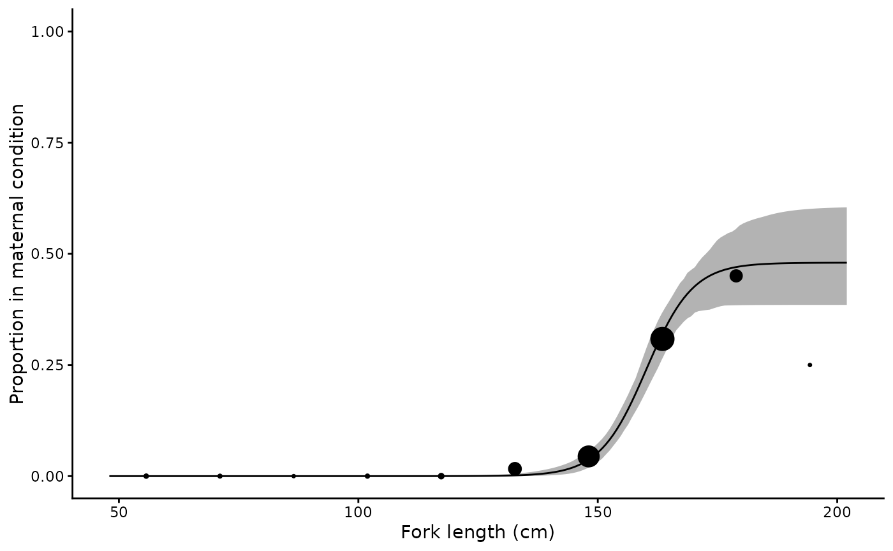

Analyse length or age at maternity
maternity.RdFits the three-parameter logistic maternity function of Walker (2005) to binary data on female maternal condition, as described in Harry et al. (2024):
Arguments
- matern
Binary maternal condition variable (0 = not maternal, 1 = maternal), defined following Walker (2005) as whether a female would give birth or lay eggs in the current year.
- x
Continuous predictor variable (e.g. length, age)
- data
A data frame containing the above variables
- pmax
Upper asymptote.
NULL(the default) estimates it from the data; a value in (0, 1] fixes it.- times
Number of bootstrap replicates (default 1000)
- start
Optional named list of starting values for
m50,m95andpmax. Derived from the data ifNULL.
Value
A one row tibble of class "maternity" containing the list
columns data, coefs, preds, mods and
boot_coefs. mods holds the RTMB objective function,
the nlminb result and the sdreport.
Details
$$E[Y_i] = P_{Max}\left(1 + e^{-\ln(19)(x_i - x_{50})/(x_{95} - x_{50})}\right)^{-1}$$
where \(Y_i\) is a Bernoulli random variable indicating whether female \(i\) is in maternal condition, \(x_{50}\) and \(x_{95}\) are the lengths (or ages) at which 50 and 95 percent of the maximum proportion \(P_{Max}\) are in maternal condition, and \(P_{Max}\) itself is the proportion of females contributing to recruitment in a given year. The model reduces to the familiar two-parameter maturity ogive when \(P_{Max} = 1\).
Two methods from Harry et al. (2024) are available. With pmax = NULL
the asymptote is estimated from the data (3PLF-estimated). Supplying
a value fixes it and estimates only m50 and m95
(3PLF-fixed), the approach of Walker (2005) where the asymptote is
chosen from knowledge of the ovarian and uterine cycles, e.g. 0.5 for a
biennial cycle or 1/3 for a triennial one. Fitting both and comparing
AIC provides a formal test of reproductive periodicity.
The model is implemented in RTMB and estimated by maximum
likelihood. Confidence intervals on the parameters and on the fitted curve
are obtained by bootstrap resampling with rsample, refitting the
model to each resample; replicates that fail to converge or contain no
maternal females are dropped and the number reported.
Harry et al. (2024) found that sample sizes of roughly 100–200 maternal
females were typically required to estimate \(P_{Max}\) accurately. With
fewer, fixing pmax from independent information is likely to be the
better choice.
References
Harry, A.V., Baremore, I.E. and Piercy, A.N. (2024) Quantifying maternal reproductive output of chondrichthyan fishes. Canadian Journal of Fisheries and Aquatic Sciences 81(10), 1481–1494. doi:10.1139/cjfas-2024-0031
Walker, T.I. (2005) Reproduction in fisheries science. In: Hamlett, W.C. (ed) Reproductive Biology and Phylogeny of Chondrichthyes. Science Publishers, Enfield, NH, pp. 81–127.
Examples
library(ggplot2)
data(sandbar)
# Estimate the asymptote
mt <- maternity(maternity_stage, FL, data = sandbar, times = 200)
#> 3 of 200 bootstrap replicates failed to converge or contained no maternal females and were dropped.
summary(mt)
#> # A tibble: 1 × 15
#> method m50 m50_lower m50_upper m95 m95_lower m95_upper pmax pmax_lower
#> <chr> <dbl> <dbl> <dbl> <dbl> <dbl> <dbl> <dbl> <dbl>
#> 1 3PLF-est… 160. 157. 165. 174. 167. 184. 0.480 0.385
#> # ℹ 6 more variables: pmax_upper <dbl>, n <int>, N <int>, nll <dbl>, AIC <dbl>,
#> # convergence <lgl>
# Fix it at 0.5, as for a biennial cycle, and compare by AIC
mt_biennial <- maternity(maternity_stage, FL, data = sandbar,
pmax = 0.5, times = 200)
summary(mt_biennial)
#> # A tibble: 1 × 15
#> method m50 m50_lower m50_upper m95 m95_lower m95_upper pmax pmax_lower
#> <chr> <dbl> <dbl> <dbl> <dbl> <dbl> <dbl> <dbl> <dbl>
#> 1 3PLF-fix… 161. 159. 163. 176. 172. 182. 0.5 NA
#> # ℹ 6 more variables: pmax_upper <dbl>, n <int>, N <int>, nll <dbl>, AIC <dbl>,
#> # convergence <lgl>
plot(mt) + xlab("Fork length (cm)") + ylab("Proportion in maternal condition")
